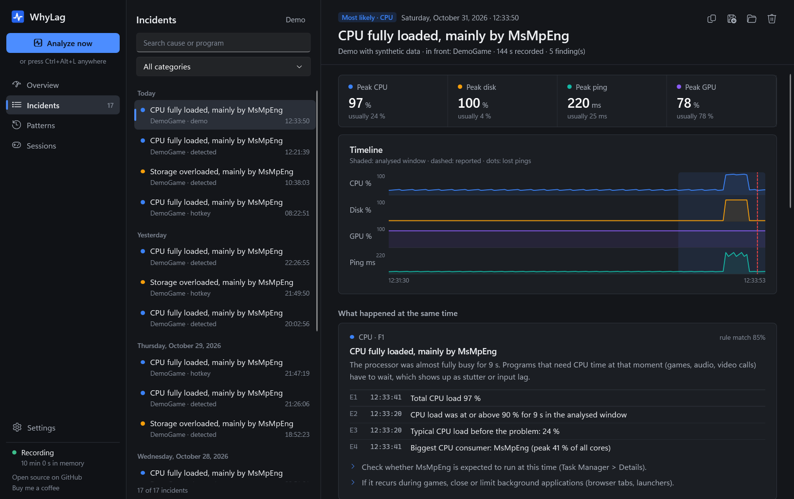
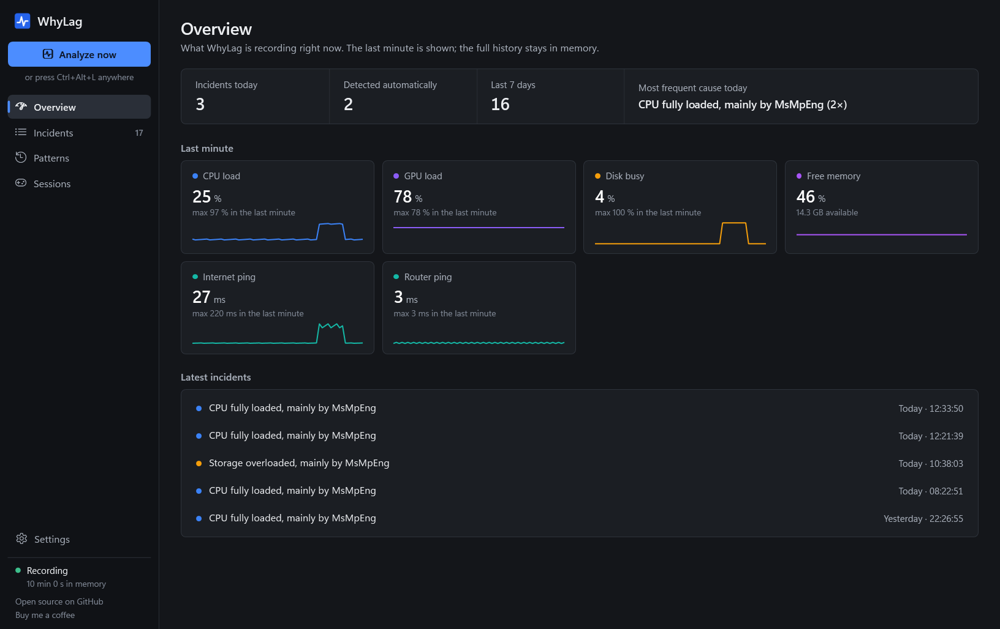

Why did it lag?
WhyLag is a flight recorder for Windows. It keeps the last minutes of CPU, disk, GPU, network, frame times and driver activity in memory. When a game stutters or a call freezes, press a hotkey and it shows what happened at that exact moment.
or winget install WhyLag.WhyLag · free, Apache-2.0 · Windows 10/11

What it finds
Background tasks
Windows Update, Defender scans, cloud sync or a launcher downloading at the wrong moment.
Network
Tells your Wi-Fi and router apart from your provider, finds bufferbloat and other devices filling the line.
Frame times
Confirms real hitches with Intel PresentMon and writes a short report after every gaming session.
Drivers
Names drivers that block the CPU (DPC/ISR) and spots driver updates after which lag got worse.
Hardware
Full CPU, GPU or disk, low memory, slow memory leaks, thermal throttling and WHEA errors.
Patterns
“This happens every Tuesday around 21:00” – recurring causes show up on their own.
How it works
- WhyLag runs quietly in the tray and records once per second, using very little CPU.
- Press
Ctrl+Alt+Lafter a lag – freezes and network spikes are also detected automatically. - Deterministic rules turn the measurements into findings, each with the measured evidence.
- Optional: a local AI model via Ollama explains the findings in plain language. Every statement is checked against the evidence; cloud models are never used.
Private by design
Everything stays on your PC: no account, no telemetry. Incidents are readable JSON files. The only network traffic is a ping per second to your router and one internet address, plus an optional daily check for a new version. Available in English, German, French, Spanish, Italian, Polish and Portuguese.
